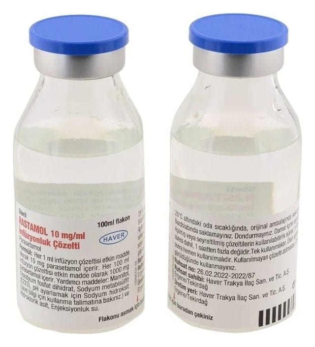

Rastamol 10 mg/ml İnfüzyonluk Çözelti, 12 Adet

Ne için kullanılır
KT · Bölüm 1• RASTAMOL 10 mg/ ml İnfüzyonluk Çözelti her 1 ml çözeltide 10 mg parasetamol içerir. • RASTAMOL 10 mg/ ml İnfüzyonluk Çözelti 12 flakonluk kutularda kullanıma sunulan berrak, renksiz ve partikül içermeyen çözeltidir. • RASTAMOL analjezik (ağrı kesici) ve antipiretikler (ateş düşürücü) olarak adlandırılan bir ilaç grubuna dahildir. • RASTAMOL 100 ml’ lik flakon; yetişkinler, ergenler ve 33 kg’ın üzerindeki çocuklarda kullanılır. • RASTAMOL ağrının ya da ateşin tedavisinde damar içine uygulamanın klinik olarak gerekli görüldüğü acil durumlarda ve/veya diğer uygulama yollarının mümkün olmadığı durumlarda (özellikle cerrahi girişimden sonra, orta şiddette ağrının ve ateşin kısa süreli tedavisinde) kullanılır.
2.RASTAMOL’ ü kullanmadan önce dikkat edilmesi gerekenler RASTAMOL’ ü aşağıdaki durumlarda KULLANMAYINIZ: Eğer; • Parasetamole, proparasetamol hidroklorür (parasetamolün ön ilacı) veya RASTAMOL ’ün içerdiği diğer yardımcı maddelerden herhangi birine karşı aşırı duyarlı (alerjik) iseniz (yardımcı maddeler listesine bakınız), • Ciddi karaciğer yetmezliğiniz ve etkin karaciğer hastalığınız varsa.
RASTAMOL’ ü aşağıdaki durumlarda DİKKATLİ KULLANINIZ: Eğer; • Parasetamol içeren başka ilaçlar kullanıyorsanız, • Kansızlığı (anemisi) olanlarda, akciğer hastalarında, karaciğer ve böbrek fonksiyon bozukluğu olan hastalarda doktor kontrolü altında dikkatli kullanılmalıdır. • Birden (akut) yüksek doz veriliğinde ciddi karaciğer toksisitesine neden olur. • Erişkinlerde uzun süreli (kronik) günlük dozlarda karaciğer hasarına neden olabilir. • Alkolik karaciğer hastalarında dikkatli kullanılmalıdır. • Glukoz 6 fosfat dihidrogenaz (G6PD) adlı bir enzim eksikliğiniz varsa (böyle bir durumda kanınızdaki hemoglobin seviyesi düşebilir, kırmızı kan hücreleri parçalanabilir ve hemolitik anemi (bir çeşit kansızlık) gelişebilir), • Süregelen alkol tüketiminiz varsa veya aşırı alkol tüketiyorsanız (her gün 3 kadeh veya daha fazla alkollü içki tüketiyorsanız), • İştahsızlığınız varsa, dengesiz ve/veya yetersiz besleniyorsanız, • Vücudunuz susuz kalmışsa • Şiddetli böbrek yetmezliği veya sepsis (bakterilerin ve toksinlerinin kanda dolaşarak organ hasarına yol açması) dâhil olmak üzere ciddi hastalıklarınız varsa veya yetersiz beslenme, kronik alkolizmden muzdaripseniz veya aynı zamanda flukloksasilin (bir antibiyotik) kullanıyorsanız. Bu durumlardaki hastalarda, parasetamol uzun süre düzenli dozlarda kullanıldığında veya parasetamol flukloksasilin ile birlikte alındığında metabolik asidoz (kan ve sıvı anormalliği) adı verilen ciddi bir durum bildirilmiştir. Metabolik asidozun belirtileri şunları içerebilir: derin ve hızlı nefes almayla birlikte ciddi nefes alma zorlukları, uyuşukluk, mide bulantısı ve kusma hissi.
Alkol alan kişilerde karaciğer zehirlenmesi (hepatotoksisite) riski nedeniyle günlük alınan parasetamol dozunun 2000 mg’ ı aşmaması gerekir.
Parasetamolü ilk kullananlarda veya daha önce kullanım hikayesi olanlarda, kullanımın ilk dozunda veya tekrarlayan dozlarında deride kızarıklık, döküntü veya bir deri reaksiyonu oluş abilmektedir. Bu durumda doktor ile irtibata geçilerek ilacın kullanımının bırakılması ve alternatif bir tedaviye geçilmesi gerekmektedir. Parasetamol ile deri reaksiyonu gözlenen kişi bir daha bu ilacı veya parasetamol içeren başka bir ilacı kullanmamalıdır. Bu durum çok ciddi ve ölümle sonuçlanabilen durumlara neden olabilmektedir (Bkz. Bölüm 4. Olası yan etkiler nelerdir?). Bu uyarılar geçmişteki herhangi bir dönemde dahi olsa, sizin için geçerliyse lütfen doktorunuza danı şınız.
RASTAMOL’ ü n yiyecek ve içecek ile kullanılması RASTAMOL’ ün yiyecek ve içeceklerle etkileşimi yoktur.
Hamilelik İlacı kullanmadan önce doktorunuza veya eczacınıza danışınız.
RASTAMOL kesinlikle gerekli olmadıkça hamilelikte kullanılmamalıdır. Doktorunuz, hamilelik esnasında RASTAMOL’ ü kullanmanın potansiyel risklerinden bahsedecektir. Tedaviniz sırasında hamile olduğunuzu fark ederseniz hemen doktorunuza veya eczacınıza danışınız. Emzirme İlacı kullanmadan önce doktorunuza veya eczacınıza danışınız. Eğer emziriyorsanız ancak doktorunuz gerekli olduğuna karar verirse RASTAMOL kullanabilirsiniz. Araç ve makine kullanımı RASTAMOL aldıktan sonra kendinizi rahatsız hissediyorsanız, araç veya herhangi bir makine kullanmamalısınız. RASTAMOL’ ün araç ve makine kullanma yeteneğini etkileyip etkilemediği bilinmemektedir. RASTAMOL’ ü n içeriğinde bulunan bazı yardımcı maddeler hakkında önemli bilgiler Bu tıbbi ürün her “doz” unda 1 mmol (23 mg)’dan daha az sodyum ihtiva eder; yani aslında “sodyum içermez”. İçeriğindeki sodyum metabisülfit nedeniyle; Nadir olarak şiddetli aşırı duyarlılık reaksiyonlarına ve bronkospazma neden olabilir.
Diğer ilaçlar ile birlikte kullanımı Eğer, • Gut hastalığının tedavisinde kullanılan probenesid içeren bir ilaç alıyorsanız dozun ayarlanması gerekebilir; • Salisilik asit türevi ağrı kesiciler (salisilamid, diflusinal) alıyorsanız, • Karaci ğerde ilaç metabolizmasında görevli olan enzimleri indükleyen maddeler [bu maddeler arasında barbitüratlar (sakinleştirici, uyku verici ve nöbet tedavisinde kullanılan, merkezi sinir sistemine etkili ilaç grubu), izoniazid (tüberküloz tedavisinde kullanılan bir ilaç), antikoagülanlar (kan pıhtılaşmasını önleyici ilaçlar), zidovudin (AIDS tedavisinde kullanılan bir ilaç), amoksisilin+klavulanik asit (bir antibiyotiktir) ve etanol (bazı ilaçlarda çözücü olarak kullanılan)] sayılabilir ancak bunlarla sınırlı değildir) alıyorsanız, • Havale tedavisinde kullanılan ilaçlar (barbituratlar, karbamazepin, fenitoin) alıyorsanız, • Düzenli olarak alkol tüketiyorsanız, • Kan pıhtılaşmasını önleyici ilaçlar (kumarin veya indandion türevi ilaçlar) alıyorsanız, • Flukloksasilin (antibiyotik), kan ve sıvı anormalliği (metabolik asidoz) riski nedeniyle acil tedavi gerektiren bir ilaç (bkz. bölüm 2). Doktorunuzu bilgilendiriniz. Doz ayarlaması gerekebilir.
Eğer reçeteli ya da reçetesiz herhangi bir ilacı şu anda kullanıyorsanız veya son zamanlarda kullandınız ise lütfen doktorunuza veya eczacınıza bunlar hakkında bilgi veriniz.